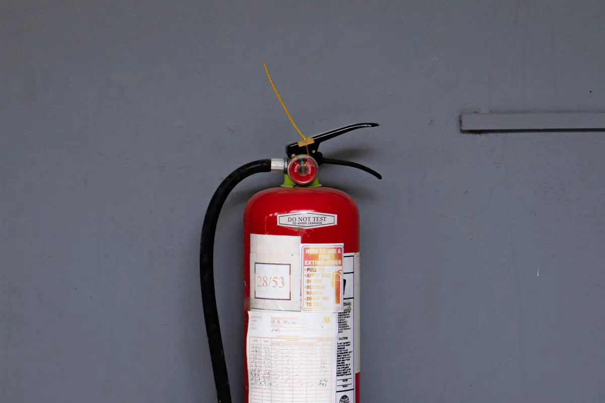

AVCB, ALCB, alvará do Bombeiro: qual é o nome no Espírito Santo?
“AVCB” (Auto de Vistoria do Corpo de Bombeiros) é o nome usado em São Paulo e virou sinônimo do documento no Brasil inteiro. No Espírito Santo, o Corpo de Bombeiros Militar (CBMES) emite o Alvará de Licença do Corpo de Bombeiros (ALCB) — é ele que a prefeitura, a seguradora, o banco e o cliente grande estão pedindo quando falam em AVCB.
Existem também o Alvará de Autorização para Funcionamento (AAFCB), para edificações de baixo potencial de risco, e o Alvará de Licença Provisório (ALPCB), que permite funcionar enquanto as medidas são executadas em etapas, depois de cumpridas medidas compensatórias. Saber em qual caso a sua edificação se encaixa é o primeiro passo — e define prazo e custo.
Quem precisa do alvará do Corpo de Bombeiros
- Empresas e indústrias — para alvará de funcionamento, licença ambiental, seguro e contratos.
- Condomínios residenciais e comerciais — exigência legal e condição do seguro do prédio.
- Escolas, creches, clínicas e hospitais — ocupações com fiscalização mais rigorosa.
- Restaurantes, bares, igrejas e eventos — locais de reunião de público.
- Galpões e depósitos — carga de incêndio alta, sistemas mais exigentes.
Como tirar o AVCB: passo a passo
- Levantamento em campo. Área construída real, altura, ocupação de cada ambiente, população e tudo o que já está instalado.
- Enquadramento. Pelas normas técnicas do CBMES, definimos quais medidas de segurança a edificação precisa ter e se cabe processo simplificado.
- Relatório de pendências. O que falta, o que está fora de norma e o que precisa ser refeito — com prioridade e estimativa de custo.
- Projeto de incêndio e protocolo. Projeto técnico de segurança contra incêndio e pânico, memorial e ART, protocolados no CBMES.
- Adequação. Instalação de extintores, sinalização, iluminação de emergência, hidrantes, alarme e o que mais o projeto exigir.
- Vistoria. Acompanhamos a vistoria do Bombeiro e respondemos às exigências até a emissão do alvará.

Documentos que a vistoria costuma pedir
| Documento | Para que serve |
|---|---|
| Projeto técnico aprovado | Mostra quais medidas a edificação precisa ter |
| ART do responsável técnico | Vincula projeto e execução a um engenheiro habilitado |
| Relatório de extintores | Carga, validade e teste hidrostático dos cilindros |
| Teste de mangueiras e hidrantes | Ensaio das mangueiras e vazão/pressão no hidrante mais desfavorável |
| Teste da iluminação de emergência | Autonomia das luminárias sem energia |
| Atestado de brigada de incêndio | Quando a ocupação exige brigada treinada |
| Laudo de SPDA e instalações elétricas | Quando exigido pela ocupação e pela norma |
AVCB vencido ou negado: o que fazer
Vencido: a renovação passa por nova vistoria. O que mais reprova é o que envelheceu desde a última — extintor vencido, mangueira sem ensaio, luminária sem bateria, porta corta-fogo travada aberta. Fazemos uma pré-vistoria e corrigimos antes de pedir a do Bombeiro.
Negado ou com exigências: lemos o relatório de exigências, separamos o que é documental do que é obra e fechamos cada item. Muitas vezes a reprovação é por documento faltando, não por falta de equipamento.
Imóvel que mudou de uso ou foi ampliado: o alvará antigo deixa de valer para a nova realidade. É preciso atualizar o projeto antes da vistoria.
Perguntas frequentes sobre AVCB no ES
O que é AVCB no Espírito Santo?
AVCB é o nome usado em São Paulo para o documento do Corpo de Bombeiros. No Espírito Santo, o CBMES emite o Alvará de Licença do Corpo de Bombeiros (ALCB); para baixo potencial de risco existe o Alvará de Autorização para Funcionamento (AAFCB), e há também o Alvará de Licença Provisório (ALPCB) para execução das medidas em etapas.
Quanto tempo demora para tirar o alvará do Bombeiro?
Depende do tamanho da edificação, do que já está instalado e de quanto precisa ser adequado. Edificação com sistemas em ordem e documentação completa anda rápido; prédio que nunca teve processo precisa de projeto e obra antes da vistoria. Fazemos o levantamento e passamos o cronograma realista.
Quanto custa tirar o AVCB?
O custo tem três partes: projeto e documentação, adequação (equipamentos e obra) e taxas do CBMES. A adequação é a parte que mais varia. Depois do levantamento em campo entregamos o relatório de pendências com estimativa por item, para você decidir com números.
Condomínio precisa de alvará do Corpo de Bombeiros?
Sim. Condomínios residenciais e comerciais precisam ter as medidas de segurança contra incêndio exigidas para a sua altura e área, e manter o alvará válido. Além da exigência legal, a seguradora costuma pedir o documento, e o síndico responde por ele.
Meu AVCB venceu. Posso ser multado?
Funcionar sem alvará válido sujeita a edificação às sanções previstas na legislação estadual de segurança contra incêndio e pânico, e pode travar alvará de funcionamento, seguro e contratos. O caminho é pedir a renovação depois de uma pré-vistoria que corrija o que envelheceu.
Vocês fazem o projeto e a instalação?
Sim. Fazemos o projeto de segurança contra incêndio e pânico com ART, instalamos as medidas exigidas e acompanhamos a vistoria até a emissão do alvará.
Alvará do Corpo de Bombeiros na Grande Vitória
Regularização no CBMES para empresas, condomínios, escolas e comércios:
Precisa do alvará do Bombeiro com prazo?
Mande o endereço, a área construída e o uso do imóvel. Retornamos com o caminho mais curto até a vistoria.